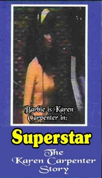

Todd Haynes
1987
43 minutes
Your first Todd Haynes flick. At some point every queer kid (or straight kid like you with lots of queer friends) plays with their sister's Barbies wrong. It brings you back to childhood, an innocent time to explore taboos and have your dolls act out all the horrid family dramas (including eating disorders) you'd seen depicted on "Phil Donahue" and "Geraldo" and Jerry Springer. Add a one-way mirror and a couple of child therapists to such a session and some follow-up conversations and you have a recipe for better adjusted children.
You didn't need to see the Barbie movie when it came out. You didn't need to see Oppenheimer either. You'd already acted out the dramas within them with your friends in school. You and another friend (a straight one) burned all his GI Joes with WD-40 and a lighter, watching them melt and recreating their agonized screams in a mix of nuclear holocaust and Agent Orange. The Culling of the GI Joes seemed quite cathartic for your friend, whose truck driver father (unbeknownst to you) had burned to death in a horrific truck crash a few months prior to your act of creative destruction. Your friend ended up institutionalized shortly afterwards and showed up heavily medicated with a heavily modified personality at school months later before being removed to a Christian private school.
Your queer Barbie friend had a similar fate, sent off to private school to spare him the merciless bullying he undoubtedly would have suffered at your school. You're glad to see he's thriving now as a photographer in a larger city.
Upon rewatching this film, you realize it had a lot more spanking in it than you initially remembered.
Feel free to take a moment to go down a Youtube rabbit hole of related queerdoll content before moving on to the next film. You've earned it. I'd particularly recommend revisiting "Ken" by The Negro Problem, Li'l Pound Cake, and Shaye St. John.
Time to choose something different: